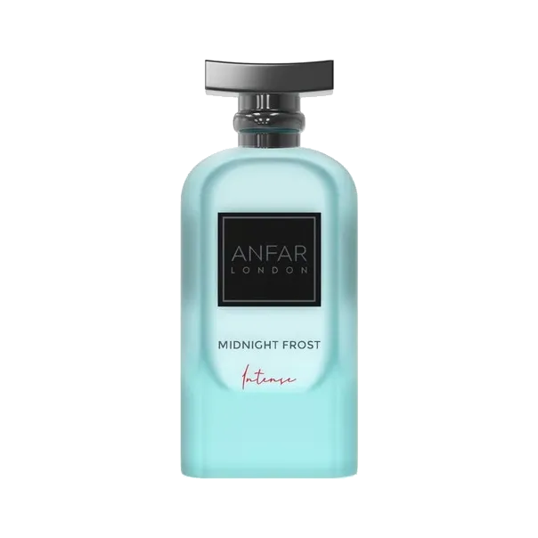

Midnight Frost Intense by Anfar London as an authentic decant — a Fresh, Fruity, Citrus, Woody, Sweet. an original creation. Ships across India with free shipping over ₹999 on 2+ decants.
| Size | Price | Per ml |
|---|---|---|
| 3ml | ₹119 | ₹40 |
| 5ml | ₹169 | ₹34 |
| 7.5ml | ₹259 | ₹35 |
| 10ml | ₹319 | ₹32 |
| 20ml | ₹589 | ₹29 |
| 30ml | ₹839 | ₹28 |
Currently in stock for decants.
Copy your choice and message us on WhatsApp — we confirm stock and payment instantly.
Order on WhatsAppCall +91 93555 33509Notes / profile: Fresh, Fruity, Citrus, Woody, Sweet.
Best for: Spring / Summer seasons, day, for daily, office, hot, mild weather.
Mood: Fresh, Energetic.
Reminds me of: Original / unique.
References: Fragrantica
Learn how this decant is filled and verified.
Season: Spring, Summer.
Occasion: Daily, Office.
Time of day: Day.
Weather: Hot, Mild.
Fragrance family: Fresh, Fruity, Citrus.
Made for: Men.
A 3ml decant is the smallest way to try this scent before committing to a larger size. New to decants? Read the decant vs full bottle guide, or see how to make perfume last longer.
It is an original fragrance in the Anfar London catalogue, so there is no clone comparison involved.
IRAM Perfume sells authentic decants of Midnight Frost Intense by Anfar London at 3ml ₹119, 5ml ₹169, 7.5ml ₹259, 10ml ₹319, 20ml ₹589 and 30ml ₹839. Shipping is free on 2-decant orders above ₹999. Full bottles are available on request.
A men's fragrance, it works best during Spring / Summer seasons, day, for daily, office, hot, mild weather. It leans fresh,energetic in character with a Fresh, Fruity, Citrus, Woody, Sweet profile.